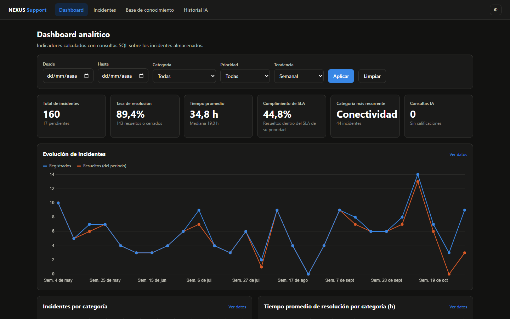
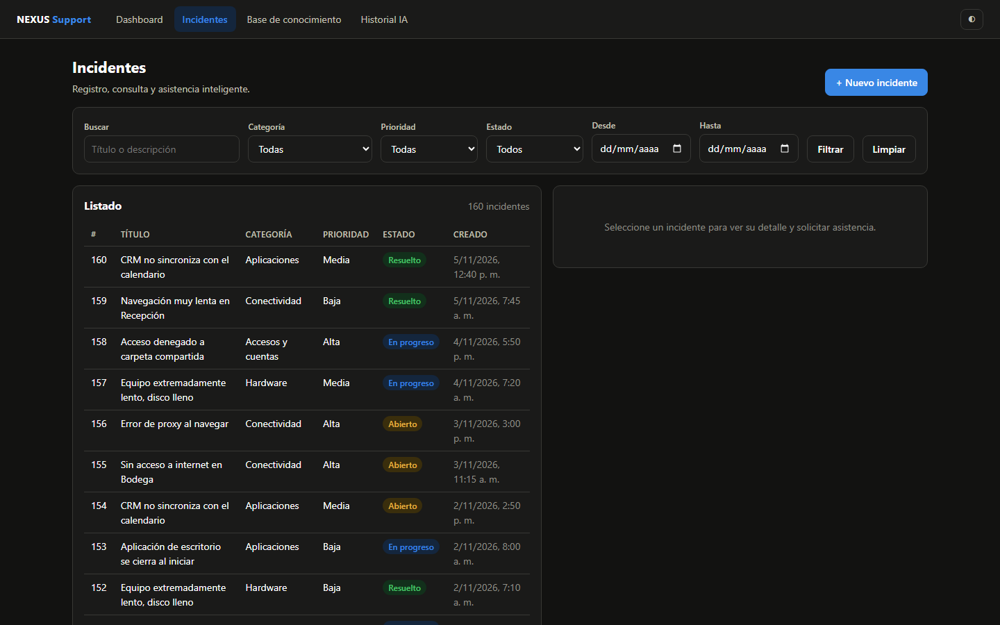
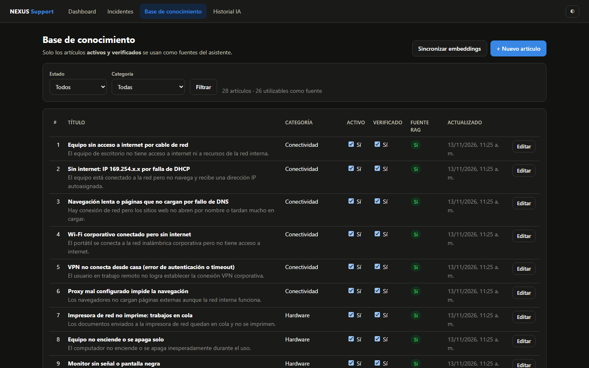

Problem
Los técnicos de soporte resuelven una y otra vez los mismos incidentes y las soluciones quedan dispersas. Además, un asistente de IA genérico puede inventar respuestas que no existen en la documentación de la empresa.
Plataforma de gestión de incidentes tecnológicos con un asistente inteligente basado en RAG. Spring Boot expone la API, n8n orquesta los embeddings y la búsqueda en Qdrant, y el modelo de lenguaje responde solo con información de la base de conocimiento, citando sus fuentes.
Los técnicos de soporte resuelven una y otra vez los mismos incidentes y las soluciones quedan dispersas. Además, un asistente de IA genérico puede inventar respuestas que no existen en la documentación de la empresa.
Cada incidente puede pedir asistencia: su descripción se convierte en un embedding, se buscan los artículos más parecidos en Qdrant, se descartan los que no superan el umbral de similitud o ya no están activos y verificados en PostgreSQL, y solo entonces el modelo genera los pasos de solución a partir de esos documentos. Si no hay información suficiente, lo dice en vez de inventar.
01Arquitectura
Valida que la descripción no esté vacía y registra la consulta como PENDIENTE.
El flujo de n8n convierte la descripción en un vector de 1536 dimensiones.
Recupera los artículos más cercanos por similitud coseno, solo entre fuentes válidas.
Aplica el umbral de 0.45 y confirma en PostgreSQL que cada artículo siga activo y verificado.
El modelo recibe solo esos documentos y devuelve solución, pasos y fuentes usadas en JSON.
Spring Boot revalida las fuentes y guarda la respuesta con sus similitudes para el historial.
02Resultado real
Incidente
“El equipo no navega, el icono de red indica sin internet y la IP asignada es 169.254.10.4”
Fuentes recuperadas de Qdrant (similitud coseno)
Respuesta generada · estado RESPONDIDA
El equipo no obtiene dirección del servidor DHCP, lo que provoca que reciba una IP autoasignada.
ipconfig /release y luego ipconfig /renew.Caso sin cobertura: para “el lector biométrico de la bodega no registra empleados nuevos” la mejor similitud fue 0.39, por debajo del umbral de 0.45. El sistema responde SIN_RESULTADOS y no llama al modelo, en lugar de inventar una solución.
03Datos
04Screenshots



05Links